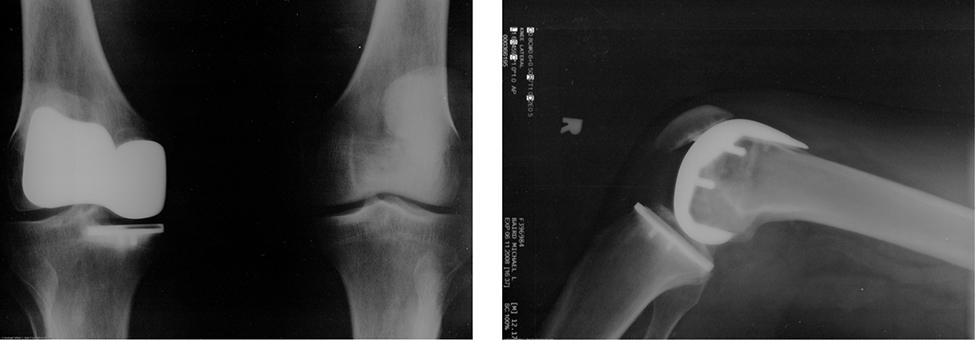
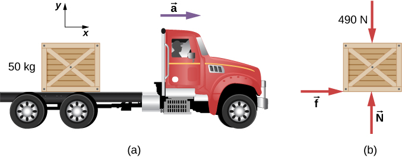
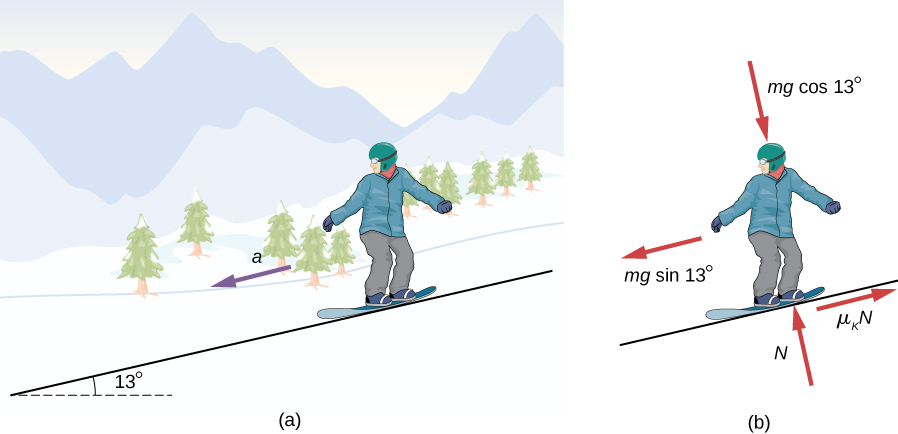
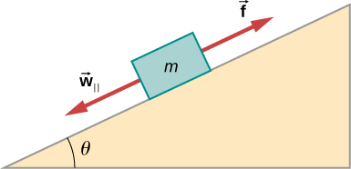
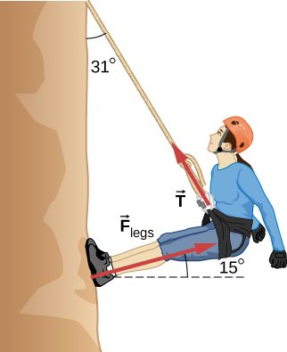
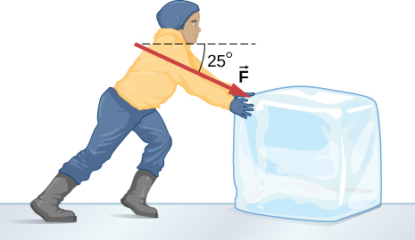
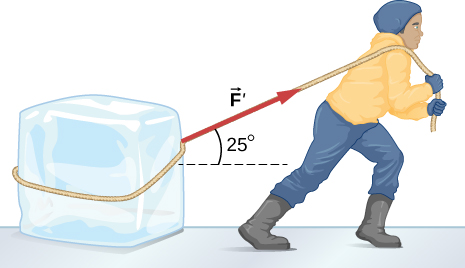

Calculate the magnitude of static and kinetic friction, and use these in problems involving Newton’s laws of motion
When a body is in motion, it has resistance because the body interacts with its surroundings. This resistance is a force of friction. Friction opposes relative motion between systems in contact but also allows us to move, a concept that becomes obvious if you try to walk on ice. Friction is a common yet complex force, and its behavior still not completely understood. Still, it is possible to understand the circumstances in which it behaves.
Static and Kinetic Friction
The basic definition of friction is relatively simple to state.
Friction
Friction is a force that opposes relative motion between systems in contact.
There are several forms of friction. One of the simpler characteristics of sliding friction is that it is parallel to the contact surfaces between systems and is always in a direction that opposes motion or attempted motion of the systems relative to each other. If two systems are in contact and moving relative to one another, then the friction between them is called kinetic friction. For example, friction slows a hockey puck sliding on ice. When objects are stationary, static friction can act between them; the static friction is usually greater than the kinetic friction between two objects.
Static and Kinetic Friction
If two systems are in contact and stationary relative to one another, then the friction between them is called static friction. If two systems are in contact and moving relative to one another, then the friction between them is called kinetic friction.
Imagine, for example, trying to slide a heavy crate across a concrete floor—you might push very hard on the crate and not move it at all. This means that the static friction responds to what you do—it increases to be equal to and in the opposite direction of your push. If you finally push hard enough, the crate seems to slip suddenly and starts to move. Now static friction gives way to kinetic friction. Once in motion, it is easier to keep it in motion than it was to get it started, indicating that the kinetic frictional force is less than the static frictional force. If you add mass to the crate, say by placing a box on top of it, you need to push even harder to get it started and also to keep it moving. Furthermore, if you oiled the concrete you would find it easier to get the crate started and keep it going (as you might expect).
[link] is a crude pictorial representation of how friction occurs at the interface between two objects. Close-up inspection of these surfaces shows them to be rough. Thus, when you push to get an object moving (in this case, a crate), you must raise the object until it can skip along with just the tips of the surface hitting, breaking off the points, or both. A considerable force can be resisted by friction with no apparent motion. The harder the surfaces are pushed together (such as if another box is placed on the crate), the more force is needed to move them. Part of the friction is due to adhesive forces between the surface molecules of the two objects, which explains the dependence of friction on the nature of the substances. For example, rubber-soled shoes slip less than those with leather soles. Adhesion varies with substances in contact and is a complicated aspect of surface physics. Once an object is moving, there are fewer points of contact (fewer molecules adhering), so less force is required to keep the object moving. At small but nonzero speeds, friction is nearly independent of speed.
Frictional forces, such as always oppose motion or attempted motion between objects in contact. Friction arises in part because of the roughness of the surfaces in contact, as seen in the expanded view. For the object to move, it must rise to where the peaks of the top surface can skip along the bottom surface. Thus, a force is required just to set the object in motion. Some of the peaks will be broken off, also requiring a force to maintain motion. Much of the friction is actually due to attractive forces between molecules making up the two objects, so that even perfectly smooth surfaces are not friction-free. (In fact, perfectly smooth, clean surfaces of similar materials would adhere, forming a bond called a “cold weld.”)
The magnitude of the frictional force has two forms: one for static situations (static friction), the other for situations involving motion (kinetic friction). What follows is an approximate empirical (experimentally determined) model only. These equations for static and kinetic friction are not vector equations.
Magnitude of Static Friction
The magnitude of static friction is
where is the coefficient of static friction and N is the magnitude of the normal force.
The symbol means less than or equal to, implying that static friction can have a maximum value of Static friction is a responsive force that increases to be equal and opposite to whatever force is exerted, up to its maximum limit. Once the applied force exceeds
the object moves. Thus,
Magnitude of Kinetic Friction
The magnitude of kinetic friction is given by
where is the coefficient of kinetic friction.
A system in which is described as a system in which friction behaves simply. The transition from static friction to kinetic friction is illustrated in [link].
(a) The force of friction between the block and the rough surface opposes the direction of the applied force The magnitude of the static friction balances that of the applied force. This is shown in the left side of the graph in (c). (b) At some point, the magnitude of the applied force is greater than the force of kinetic friction, and the block moves to the right. This is shown in the right side of the graph. (c) The graph of the frictional force versus the applied force; note that This means that
As you can see in [link], the coefficients of kinetic friction are less than their static counterparts. The approximate values of are stated to only one or two digits to indicate the approximate description of friction given by the preceding two equations.
Approximate Coefficients of Static and Kinetic Friction
System
Static Friction
Kinetic Friction
Rubber on dry concrete
1.0
0.7
Rubber on wet concrete
0.5-0.7
0.3-0.5
Wood on wood
0.5
0.3
Waxed wood on wet snow
0.14
0.1
Metal on wood
0.5
0.3
Steel on steel (dry)
0.6
0.3
Steel on steel (oiled)
0.05
0.03
Teflon on steel
0.04
0.04
Bone lubricated by synovial fluid
0.016
0.015
Shoes on wood
0.9
0.7
Shoes on ice
0.1
0.05
Ice on ice
0.1
0.03
Steel on ice
0.4
0.02
[link] and [link] include the dependence of friction on materials and the normal force. The direction of friction is always opposite that of motion, parallel to the surface between objects, and perpendicular to the normal force. For example, if the crate you try to push (with a force parallel to the floor) has a mass of 100 kg, then the normal force is equal to its weight,
perpendicular to the floor. If the coefficient of static friction is 0.45, you would have to exert a force parallel to the floor greater than
to move the crate. Once there is motion, friction is less and the coefficient of kinetic friction might be 0.30, so that a force of only
keeps it moving at a constant speed. If the floor is lubricated, both coefficients are considerably less than they would be without lubrication. Coefficient of friction is a unitless quantity with a magnitude usually between 0 and 1.0. The actual value depends on the two surfaces that are in contact.
Many people have experienced the slipperiness of walking on ice. However, many parts of the body, especially the joints, have much smaller coefficients of friction—often three or four times less than ice. A joint is formed by the ends of two bones, which are connected by thick tissues. The knee joint is formed by the lower leg bone (the tibia) and the thighbone (the femur). The hip is a ball (at the end of the femur) and socket (part of the pelvis) joint. The ends of the bones in the joint are covered by cartilage, which provides a smooth, almost-glassy surface. The joints also produce a fluid (synovial fluid) that reduces friction and wear. A damaged or arthritic joint can be replaced by an artificial joint ([link]). These replacements can be made of metals (stainless steel or titanium) or plastic (polyethylene), also with very small coefficients of friction.
Artificial knee replacement is a procedure that has been performed for more than 20 years. These post-operative X-rays show a right knee joint replacement. (credit: modification of work by Mike Baird)

Natural lubricants include saliva produced in our mouths to aid in the swallowing process, and the slippery mucus found between organs in the body, allowing them to move freely past each other during heartbeats, during breathing, and when a person moves. Hospitals and doctor’s clinics commonly use artificial lubricants, such as gels, to reduce friction.
The equations given for static and kinetic friction are empirical laws that describe the behavior of the forces of friction. While these formulas are very useful for practical purposes, they do not have the status of mathematical statements that represent general principles (e.g., Newton’s second law). In fact, there are cases for which these equations are not even good approximations. For instance, neither formula is accurate for lubricated surfaces or for two surfaces siding across each other at high speeds. Unless specified, we will not be concerned with these exceptions.
Static and Kinetic Friction
A 20.0-kg crate is at rest on a floor as shown in [link]. The coefficient of static friction between the crate and floor is 0.700 and the coefficient of kinetic friction is 0.600. A horizontal force is applied to the crate. Find the force of friction if
(a)
(b)
(c) and
(d)
(a) A crate on a horizontal surface is pushed with a force (b) The forces on the crate. Here, may represent either the static or the kinetic frictional force.
Strategy
The free-body diagram of the crate is shown in [link](b). We apply Newton’s second law in the horizontal and vertical directions, including the friction force in opposition to the direction of motion of the box.
SolutionNewton’s second law GIVES
Here we are using the symbol f to represent the frictional force since we have not yet determined whether the crate is subject to station friction or kinetic friction. We do this whenever we are unsure what type of friction is acting. Now the weight of the crate is
which is also equal to N. The maximum force of static friction is therefore As long as is less than 137 N, the force of static friction keeps the crate stationary and Thus, (a) (b) and (c)
(d) If the applied force is greater than the maximum force of static friction (137 N), so the crate can no longer remain at rest. Once the crate is in motion, kinetic friction acts. Then
and the acceleration is
Significance
This example illustrates how we consider friction in a dynamics problem. Notice that static friction has a value that matches the applied force, until we reach the maximum value of static friction. Also, no motion can occur until the applied force equals the force of static friction, but the force of kinetic friction will then become smaller.
Check Your Understanding A block of mass 1.0 kg rests on a horizontal surface. The frictional coefficients for the block and surface are and (a) What is the minimum horizontal force required to move the block? (b) What is the block’s acceleration when this force is applied?
a. 4.9 N; b. 0.98 m/s2
Friction and the Inclined Plane
One situation where friction plays an obvious role is that of an object on a slope. It might be a crate being pushed up a ramp to a loading dock or a skateboarder coasting down a mountain, but the basic physics is the same. We usually generalize the sloping surface and call it an inclined plane but then pretend that the surface is flat. Let’s look at an example of analyzing motion on an inclined plane with friction.
Downhill SkierA skier with a mass of 62 kg is sliding down a snowy slope at a constant acceleration. Find the coefficient of kinetic friction for the skier if friction is known to be 45.0 N.
Strategy
The magnitude of kinetic friction is given as 45.0 N. Kinetic friction is related to the normal force by ; thus, we can find the coefficient of kinetic friction if we can find the normal force on the skier. The normal force is always perpendicular to the surface, and since there is no motion perpendicular to the surface, the normal force should equal the component of the skier’s weight perpendicular to the slope. (See [link], which repeats a figure from the chapter on Newton’s laws of motion.)
The motion of the skier and friction are parallel to the slope, so it is most convenient to project all forces onto a coordinate system where one axis is parallel to the slope and the other is perpendicular (axes shown to left of skier). The normal force is perpendicular to the slope, and friction is parallel to the slope, but the skier’s weight has components along both axes, namely and The normal force is equal in magnitude to so there is no motion perpendicular to the slope.
We have
Substituting this into our expression for kinetic friction, we obtain
which can now be solved for the coefficient of kinetic friction
Solution
Solving for gives
Substituting known values on the right-hand side of the equation,
Significance
This result is a little smaller than the coefficient listed in [link] for waxed wood on snow, but it is still reasonable since values of the coefficients of friction can vary greatly. In situations like this, where an object of mass m slides down a slope that makes an angle with the horizontal, friction is given by All objects slide down a slope with constant acceleration under these circumstances.
We have discussed that when an object rests on a horizontal surface, the normal force supporting it is equal in magnitude to its weight. Furthermore, simple friction is always proportional to the normal force. When an object is not on a horizontal surface, as with the inclined plane, we must find the force acting on the object that is directed perpendicular to the surface; it is a component of the weight.
We now derive a useful relationship for calculating coefficient of friction on an inclined plane. Notice that the result applies only for situations in which the object slides at constant speed down the ramp.
An object slides down an inclined plane at a constant velocity if the net force on the object is zero. We can use this fact to measure the coefficient of kinetic friction between two objects. As shown in [link], the kinetic friction on a slope is . The component of the weight down the slope is equal to (see the free-body diagram in [link]). These forces act in opposite directions, so when they have equal magnitude, the acceleration is zero. Writing these out,
Solving for we find that
Put a coin on a book and tilt it until the coin slides at a constant velocity down the book. You might need to tap the book lightly to get the coin to move. Measure the angle of tilt relative to the horizontal and find Note that the coin does not start to slide at all until an angle greater than is attained, since the coefficient of static friction is larger than the coefficient of kinetic friction. Think about how this may affect the value for and its uncertainty.
Atomic-Scale Explanations of Friction
The simpler aspects of friction dealt with so far are its macroscopic (large-scale) characteristics. Great strides have been made in the atomic-scale explanation of friction during the past several decades. Researchers are finding that the atomic nature of friction seems to have several fundamental characteristics. These characteristics not only explain some of the simpler aspects of friction—they also hold the potential for the development of nearly friction-free environments that could save hundreds of billions of dollars in energy which is currently being converted (unnecessarily) into heat.
[link] illustrates one macroscopic characteristic of friction that is explained by microscopic (small-scale) research. We have noted that friction is proportional to the normal force, but not to the amount of area in contact, a somewhat counterintuitive notion. When two rough surfaces are in contact, the actual contact area is a tiny fraction of the total area because only high spots touch. When a greater normal force is exerted, the actual contact area increases, and we find that the friction is proportional to this area.
Two rough surfaces in contact have a much smaller area of actual contact than their total area. When the normal force is larger as a result of a larger applied force, the area of actual contact increases, as does friction.
However, the atomic-scale view promises to explain far more than the simpler features of friction. The mechanism for how heat is generated is now being determined. In other words, why do surfaces get warmer when rubbed? Essentially, atoms are linked with one another to form lattices. When surfaces rub, the surface atoms adhere and cause atomic lattices to vibrate—essentially creating sound waves that penetrate the material. The sound waves diminish with distance, and their energy is converted into heat. Chemical reactions that are related to frictional wear can also occur between atoms and molecules on the surfaces. [link] shows how the tip of a probe drawn across another material is deformed by atomic-scale friction. The force needed to drag the tip can be measured and is found to be related to shear stress, which is discussed in Static Equilibrium and Elasticity. The variation in shear stress is remarkable (more than a factor of ) and difficult to predict theoretically, but shear stress is yielding a fundamental understanding of a large-scale phenomenon known since ancient times—friction.
The tip of a probe is deformed sideways by frictional force as the probe is dragged across a surface. Measurements of how the force varies for different materials are yielding fundamental insights into the atomic nature of friction.
Describe a model for friction on a molecular level. Describe matter in terms of molecular motion. The description should include diagrams to support the description; how the temperature affects the image; what are the differences and similarities between solid, liquid, and gas particle motion; and how the size and speed of gas molecules relate to everyday objects.
Sliding Blocks
The two blocks of [link] are attached to each other by a massless string that is wrapped around a frictionless pulley. When the bottom 4.00-kg block is pulled to the left by the constant force the top 2.00-kg block slides across it to the right. Find the magnitude of the force necessary to move the blocks at constant speed. Assume that the coefficient of kinetic friction between all surfaces is 0.400.
(a) Each block moves at constant velocity. (b) Free-body diagrams for the blocks.
Strategy
We analyze the motions of the two blocks separately. The top block is subjected to a contact force exerted by the bottom block. The components of this force are the normal force and the frictional force Other forces on the top block are the tension in the string and the weight of the top block itself, 19.6 N. The bottom block is subjected to contact forces due to the top block and due to the floor. The first contact force has components and which are simply reaction forces to the contact forces that the bottom block exerts on the top block. The components of the contact force of the floor are and Other forces on this block are the tension and the weight –39.2 N.
Solution
Since the top block is moving horizontally to the right at constant velocity, its acceleration is zero in both the horizontal and the vertical directions. From Newton’s second law,
Solving for the two unknowns, we obtain and The bottom block is also not accelerating, so the application of Newton’s second law to this block gives
The values of and T were found with the first set of equations. When these values are substituted into the second set of equations, we can determine and P. They are
Significance
Understanding what direction in which to draw the friction force is often troublesome. Notice that each friction force labeled in [link] acts in the direction opposite the motion of its corresponding block.
A Crate on an Accelerating Truck
A 50.0-kg crate rests on the bed of a truck as shown in [link]. The coefficients of friction between the surfaces are and Find the frictional force on the crate when the truck is accelerating forward relative to the ground at (a) 2.00 m/s2, and (b) 5.00 m/s2.
(a) A crate rests on the bed of the truck that is accelerating forward. (b) The free-body diagram of the crate.

Strategy
The forces on the crate are its weight and the normal and frictional forces due to contact with the truck bed. We start by assuming that the crate is not slipping. In this case, the static frictional force acts on the crate. Furthermore, the accelerations of the crate and the truck are equal.
Solution
Application of Newton’s second law to the crate, using the reference frame attached to the ground, yields
We can now check the validity of our no-slip assumption. The maximum value of the force of static friction is
whereas the actual force of static friction that acts when the truck accelerates forward at is only Thus, the assumption of no slipping is valid.
If the crate is to move with the truck when it accelerates at the force of static friction must be
Since this exceeds the maximum of 196 N, the crate must slip. The frictional force is therefore kinetic and is
The horizontal acceleration of the crate relative to the ground is now found from
Significance
Relative to the ground, the truck is accelerating forward at and the crate is accelerating forward at . Hence the crate is sliding backward relative to the bed of the truck with an acceleration
Snowboarding
Earlier, we analyzed the situation of a downhill skier moving at constant velocity to determine the coefficient of kinetic friction. Now let’s do a similar analysis to determine acceleration. The snowboarder of [link] glides down a slope that is inclined at to the horizontal. The coefficient of kinetic friction between the board and the snow is What is the acceleration of the snowboarder?
(a) A snowboarder glides down a slope inclined at 13° to the horizontal. (b) The free-body diagram of the snowboarder.

Strategy
The forces acting on the snowboarder are her weight and the contact force of the slope, which has a component normal to the incline and a component along the incline (force of kinetic friction). Because she moves along the slope, the most convenient reference frame for analyzing her motion is one with the x-axis along and the y-axis perpendicular to the incline. In this frame, both the normal and the frictional forces lie along coordinate axes, the components of the weight are , and the only acceleration is along the x-axis
Solution
We can now apply Newton’s second law to the snowboarder:
From the second equation, Upon substituting this into the first equation, we find
Significance
Notice from this equation that if is small enough or is large enough, is negative, that is, the snowboarder slows down.
Check Your Understanding The snowboarder is now moving down a hill with incline . What is the skier’s acceleration?
; the negative sign indicates that the snowboarder is slowing down.
Summary
Friction is a contact force that opposes the motion or attempted motion between two systems. Simple friction is proportional to the normal force N supporting the two systems.
The magnitude of static friction force between two materials stationary relative to each other is determined using the coefficient of static friction, which depends on both materials.
The kinetic friction force between two materials moving relative to each other is determined using the coefficient of kinetic friction, which also depends on both materials and is always less than the coefficient of static friction.
Conceptual Questions
The glue on a piece of tape can exert forces. Can these forces be a type of simple friction? Explain, considering especially that tape can stick to vertical walls and even to ceilings.
When you learn to drive, you discover that you need to let up slightly on the brake pedal as you come to a stop or the car will stop with a jerk. Explain this in terms of the relationship between static and kinetic friction.
If you do not let up on the brake pedal, the car’s wheels will lock so that they are not rolling; sliding friction is now involved and the sudden change (due to the larger force of static friction) causes the jerk.
When you push a piece of chalk across a chalkboard, it sometimes screeches because it rapidly alternates between slipping and sticking to the board. Describe this process in more detail, in particular, explaining how it is related to the fact that kinetic friction is less than static friction. (The same slip-grab process occurs when tires screech on pavement.)
A physics major is cooking breakfast when she notices that the frictional force between her steel spatula and Teflon frying pan is only 0.200 N. Knowing the coefficient of kinetic friction between the two materials, she quickly calculates the normal force. What is it?
5.00 N
Problems
(a) When rebuilding his car’s engine, a physics major must exert N of force to insert a dry steel piston into a steel cylinder. What is the normal force between the piston and cylinder? (b) What force would he have to exert if the steel parts were oiled?
(a) What is the maximum frictional force in the knee joint of a person who supports 66.0 kg of her mass on that knee? (b) During strenuous exercise, it is possible to exert forces to the joints that are easily 10 times greater than the weight being supported. What is the maximum force of friction under such conditions? The frictional forces in joints are relatively small in all circumstances except when the joints deteriorate, such as from injury or arthritis. Increased frictional forces can cause further damage and pain.
a. 10.0 N; b. 97.0 N
Suppose you have a 120-kg wooden crate resting on a wood floor, with coefficient of static friction 0.500 between these wood surfaces. (a) What maximum force can you exert horizontally on the crate without moving it? (b) If you continue to exert this force once the crate starts to slip, what will its acceleration then be? The coefficient of sliding friction is known to be 0.300 for this situation.
(a) If half of the weight of a small utility truck is supported by its two drive wheels, what is the maximum acceleration it can achieve on dry concrete? (b) Will a metal cabinet lying on the wooden bed of the truck slip if it accelerates at this rate? (c) Solve both problems assuming the truck has four-wheel drive.
a. ; b. The cabinet will not slip. c. The cabinet will slip.
A team of eight dogs pulls a sled with waxed wood runners on wet snow (mush!). The dogs have average masses of 19.0 kg, and the loaded sled with its rider has a mass of 210 kg. (a) Calculate the acceleration of the dogs starting from rest if each dog exerts an average force of 185 N backward on the snow. (b) Calculate the force in the coupling between the dogs and the sled.
Consider the 65.0-kg ice skater being pushed by two others shown below. (a) Find the direction and magnitude of the total force exerted on her by the others, given that the magnitudes and are 26.4 N and 18.6 N, respectively. (b) What is her initial acceleration if she is initially stationary and wearing steel-bladed skates that point in the direction of (c) What is her acceleration assuming she is already moving in the direction of (Remember that friction always acts in the direction opposite that of motion or attempted motion between surfaces in contact.)
a. 32.3 N, b. 0; c. in the direction of
Show that the acceleration of any object down a frictionless incline that makes an angle with the horizontal is . (Note that this acceleration is independent of mass.)
Show that the acceleration of any object down an incline where friction behaves simply (that is, where is Note that the acceleration is independent of mass and reduces to the expression found in the previous problem when friction becomes negligibly small
Calculate the acceleration opposite to the motion of a snow boarder going up a slope, assuming the coefficient of friction for waxed wood on wet snow. The result of the preceding problem may be useful, but be careful to consider the fact that the snow boarder is going uphill.
A machine at a post office sends packages out a chute and down a ramp to be loaded into delivery vehicles. (a) Calculate the acceleration of a box heading down a slope, assuming the coefficient of friction for a parcel on waxed wood is 0.100. (b) Find the angle of the slope down which this box could move at a constant velocity. You can neglect air resistance in both parts.
a. b.
If an object is to rest on an incline without slipping, then friction must equal the component of the weight of the object parallel to the incline. This requires greater and greater friction for steeper slopes. Show that the maximum angle of an incline above the horizontal for which an object will not slide down is You may use the result of the previous problem. Assume that and that static friction has reached its maximum value.

Calculate the maximum acceleration of a car that is heading down a slope (one that makes an angle of with the horizontal) under the following road conditions. You may assume that the weight of the car is evenly distributed on all four tires and that the coefficient of static friction is involved—that is, the tires are not allowed to slip during the acceleration opposite to the motion. (Ignore rolling.) Calculate for a car: (a) On dry concrete. (b) On wet concrete. (c) On ice, assuming that , the same as for shoes on ice.
a. b. c.
Calculate the maximum acceleration of a car that is heading up a slope (one that makes an angle of with the horizontal) under the following road conditions. Assume that only half the weight of the car is supported by the two drive wheels and that the coefficient of static friction is involved—that is, the tires are not allowed to slip during the acceleration. (Ignore rolling.) (a) On dry concrete. (b) On wet concrete. (c) On ice, assuming that , the same as for shoes on ice.
Repeat the preceding problem for a car with four-wheel drive.
a. b. c.
A freight train consists of two engines and 45 cars with average masses of (a) What force must each engine exert backward on the track to accelerate the train at a rate of if the force of friction is , assuming the engines exert identical forces? This is not a large frictional force for such a massive system. Rolling friction for trains is small, and consequently, trains are very energy-efficient transportation systems. (b) What is the force in the coupling between the 37th and 38th cars (this is the force each exerts on the other), assuming all cars have the same mass and that friction is evenly distributed among all of the cars and engines?
Consider the 52.0-kg mountain climber shown below. (a) Find the tension in the rope and the force that the mountain climber must exert with her feet on the vertical rock face to remain stationary. Assume that the force is exerted parallel to her legs. Also, assume negligible force exerted by her arms. (b) What is the minimum coefficient of friction between her shoes and the cliff?

a. 272 N, 512 N; b. 0.268
A contestant in a winter sporting event pushes a 45.0-kg block of ice across a frozen lake as shown below. The coefficient of friction of ice can be found in [link]. (a) Calculate the minimum force F he must exert to get the block moving. (b) What is its acceleration once it starts to move, if that force is maintained?

The contestant now pulls the block of ice with a rope over his shoulder at the same angle above the horizontal as shown below. The coefficient of friction of ice can be found in [link]. Calculate the minimum force F he must exert to get the block moving. (b) What is its acceleration once it starts to move, if that force is maintained?

a. 46.5 N; b.
At a post office, a parcel that is a 20.0-kg box slides down a ramp inclined at with the horizontal. The coefficient of kinetic friction between the box and plane is 0.0300. (a) Find the acceleration of the box. (b) Find the velocity of the box as it reaches the end of the plane, if the length of the plane is 2 m and the box starts at rest.
Glossary
friction
force that opposes relative motion or attempts at motion between systems in contact
kinetic friction
force that opposes the motion of two systems that are in contact and moving relative to each other
static friction
force that opposes the motion of two systems that are in contact and are not moving relative to each other
![The figure shows a crate on a flat surface. A black arrow points toward the right, away from the crate, and is labeled as the direction of motion or attempted motion. A red arrow pointing toward the left is located near the bottom left corner of the crate, at the interface between that corner and the supporting surface and is labeled as f. A magnified view of a bottom corner of the crate and the supporting surface shows that the roughness in the two surfaces leads to small gaps between them. There is direct contact only at a few points.](CNX_UPhysics_06_02_Friction.jpg)
![(a) The figure shows a block on a horizontal surface. The situation is that of impending motion. The following forces are shown: N vertically up, w vertically down, F to the right, f sub s to the left. Vectors N and w are the same size. Vectors F and f sub s are the same size. (b) The figure shows a block on a horizontal surface. The motion is to the right. The situation is that of friction behaving simply. The following forces are shown: N vertically up, w vertically down, F to the right, f sub k to the left. Vectors N and w are the same size. Vectors F is larger than f sub s. (c) A graph of the magnitude of the friction force f as a function of the applied force F is shown. In the interval from 0 to when the magnitude of f equals f sub s max, the graph is a straight line described by f sub s equals F. This is the static region, and f sub s max equals mu sub s times N. For values of F larger than this maximum value of f, the graph drops a bit then flattens out to a somewhat noisy but constant on average value. This is the kinetic region in which the magnitude of f is f sub k which is also equal to mu sub k times N.](CNX_UPhysics_06_02_FrictGraph.jpg)

![The figure shows a skier going down a slope that forms an angle of 25 degrees with the horizontal. An x y coordinate system is shown, tilted so that the positive x direction is parallel to the slop, pointing up the slope, and the positive y direction is out of the slope, perpendicular to it. The weight of the skier, labeled w, is represented by a red arrow pointing vertically downward. This weight is divided into two components, w sub y is perpendicular to the slope pointing in the minus y direction, and w sub x is parallel to the slope, pointing in the minus x direction. The normal force, labeled N, is also perpendicular to the slope, equal in magnitude but pointing out, opposite in direction to w sub y. The friction, f, is represented by a red arrow pointing upslope. In addition, the figure shows a free body diagram that shows the relative magnitudes and directions of f, N, w, and the components w sub x and w sub y of w. In both diagrams, the w vector is scribbled out, as it is replaced by its components.](CNX_UPhysics_06_02_Skislope2.jpg)
![This figure has two parts, each of which shows two rough parallel surfaces in close proximity to each other. Because the surfaces are irregular, the two surfaces contact each other only at certain points, leaving gaps in between. In the first part, the normal force is small, so that the surfaces are farther apart and area of contact between the two surfaces is much smaller than their total area. In the second part, the normal force is large, so that the two surfaces are very close to each other and area of contact between the two surfaces has increased.](CNX_UPhysics_06_02_Force.jpg)
![This figure shows a molecular model of a probe that is dragged over the surface of a substrate. The substrate is represented by a rectangular grid of small spheres, each sphere representing an atom. The probe, made up of a different grid of small spheres, is in the form of an inverted pyramid with a flattened peak and horizontal layers of atoms. The pyramid is somewhat distorted because of friction. The atomic and molecular interactions occur at the interface between the probe and the substrate. The friction, f, is parallel to the surface and in the opposite direction of the motion of the probe.](CNX_UPhysics_06_02_Probe.jpg)
![Figure (a) shows an illustration of a 4.0 kilogram block on a horizontal surface and a 2.0 kilogram block resting on top of it. A pulley is connected horizontally to a wall to the right of the blocks. The blocks are connected by a string that passes from one block, over the pulley, and to the other block so that the string is horizontal and to the right of each block. A force P pulls the lower block to the left. An x y coordinate system is shown, with positive x to the right and positive y up. Figure (b) shows the free body diagrams of the blocks. The upper block has forces mu times vector N sub 1 to the left, vector T to the right, 19.6 N vertically down, and vector N sub 1 up. The lower block has forces mu times vector N sub 1 to the right, mu times vector N sub 2 to the right, Vector P to the left, vector T sub i to the right, Vector N sub 1 vertically down, weight w down, and vector N sub 2 up.](CNX_UPhysics_06_02_Blocks.jpg)
![(a) Overhead view of two ice skaters pushing on a third. One skater pushes with a force F one, represented by an arrow pointing to the right, and a second skater pushes with a force F two, represented by an arrow pointing up. Vector F one and vector F two are along the arms of the two skaters acting on the third skater. A vector diagram is shown in the form of a right triangle in which the base is vector F one pointing to the right, and perpendicular to F one is vector F two pointing up. The resultant vector is shown by the hypotenuse pointing up and to the right and is labeled as vector F sub tot. (b) Free body diagram showing only the forces F sub one and F sub 2 acting on the skater.](CNX_UPhysics_06_02_P10_img.jpg)
![An illustration of block on a slope. The slope angles down and to the right at an angle of theta degrees to the horizontal. The block has an acceleration a parallel to the slope, toward its bottom. The following forces are shown: N perpendicular to the slope and pointing out of it, and w which equals m times g vertically down. An x y coordinate system is shown tilted so that positive x is downslope, parallel to the surface, and positive y is perpendicular to the slope, pointing out of the surface.](CNX_UPhysics_06_02_P11ans_img.jpg)
![An illustration of block on a slope. The slope angles down and to the right at an angle of theta degrees to the horizontal. The block has an acceleration, a, parallel to the slope, toward its bottom. The following forces are shown: f in a direction parallel to the slope toward its top, N perpendicular to the slope and pointing out of it, w sub x in a direction parallel to the slope toward its bottom, and w sub y perpendicular to the slope and pointing into it. An x y coordinate system is shown tilted so that positive x is downslope, parallel to the surface, and positive y is perpendicular to the slope, pointing out of the surface.](CNX_UPhysics_06_02_P12ans_img_new.jpg)